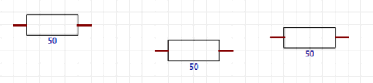
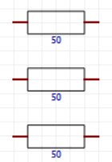
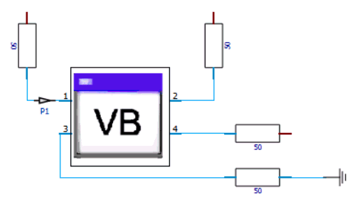
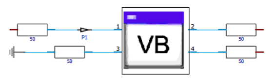
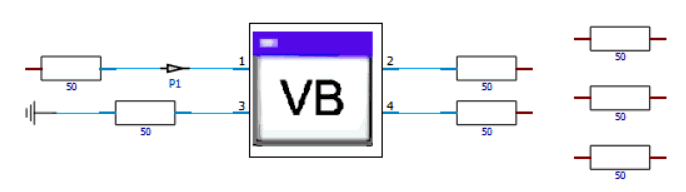
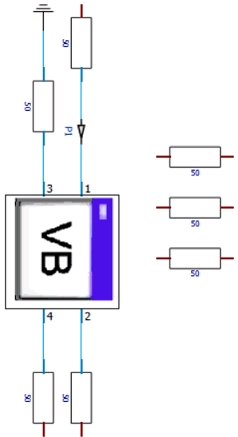
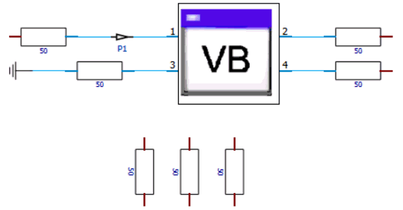
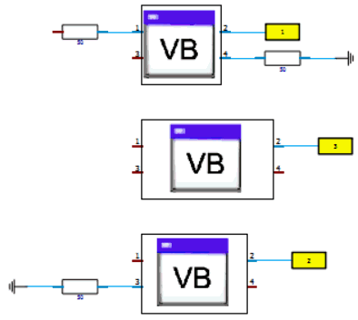
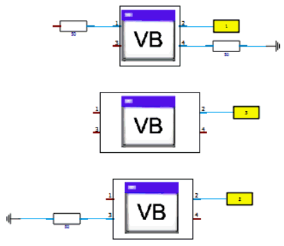
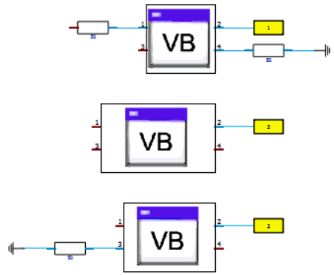

Use this object to arrange blocks on the schematic.
A block layout consists of groups of blocks that are arranged horizontally or vertically. A special kind of layout group arranges the blocks depending on how the pins are connected. Each layouted group results in a new group that can be used in further layouts. Nested layout groups are supported.
Methods
Examples
Reset
Resets all internal settings to the default state and invalidates all group ids
Apply
Executes all previously defined arrange commands. This will actually layout the blocks on the screen. Apply can be called multiple times, but only unprocessed arrange commands will be executed.
CreateLayoutGroupByConnections( name blockname ) int
Creates a new group of blocks ready to be laid out. The command assembles all blocks connected directly or indirectly to the block 'blockname' and puts them into the group.
'blockname' is usually the result of one of the lookup methods, see Block Lookup Methods.
Returns the id of the new group.
CreateLayoutGroupByBlocks( variant blockNames_strArray ) int
Creates a new group of blocks ready to be laid out. All blocks specfied by name in 'blockNames_strArray' are included in the new group.
Returns the id of the new group.
ArrangeLayoutGroupMembers( int groupId, string layoutType ) int
Schedules the members of the group identified by 'groupId' to be laid out as 'layoutType'. The following values are acceptable for 'layoutType'
"Horizontal": layout the blocks in this group horizontally.
"Vertical": layout the blocks in this group vertically.
"ConnectionBased": layout the blocks in this group, so that connected pins face each other and the blocks are positioned closely to the ports they are connected to.
Returns the id of the new group.
ArrangeLayoutGroups( variant groupIds_intArray, string layoutType, string alignment, bool spaceOptimization ) int
Schedules the groups identified by the ids in 'groupIds_intArray' to be laid out as 'layoutType'. The following values are acceptable for 'layoutType'
"Horizontal": layout the groups horizontally.
"Vertical": layout the groups vertically.
Note: In a horizontal layout the groups are distributes from left to right, in a vertical layout the groups are distributed from top to bottom.
The groups can be aligned with each other using the 'alignment' parameter. The first block of a group (e.g. the block that was used to create the group) is taken as the reference block which is used to align all members of the group. The following values are acceptable for 'alignment':
"None": no alignment of base blocks.
"Top" : align the top edge of base blocks in a horizontal layout.
"Bottom" : align the bottom edge of base blocks in a horizontal layout.
"Left": align the left edge of base blocks in a vertical layout.
"Right": align the right edge of base blocks in a vertical layout.
"Center": align the center points of base blocks in both horizontal and vertical layouts.
If 'spaceOptimization' is set to True, the method will try to find the most compact way for the desired layout type. In effect this might result in groups that are rotated 90 degrees before applying the layout.
Returns the id of the new group.
Blocks are addressed by name. Since blocks, probes, and external ports share the same name space (e.g. a block may have the same name as a probe) the names have to be disambiguated before use. For this purpose there are three special methods available:
Block( name blockName ) string
Returns a name that uniquely identifies a block.
ExtPort( name blockName ) string
Returns a name that uniquely identifies an external port.
Probe( name blockName ) string
Returns a name that uniquely identifies a probe.
Example 1: A simple vertical layout.
We have thee blocks "RES1", "RES2", and "RES3" which can be anywhere on the schematic. This could look like this:

Let's start a script:
Sub Main
With SchematicLayout
Dim group1 As Long
Dim blocks(2) As String
Now we need to specify the blocks we want to layout:
blocks(0)=.Block("RES1")
blocks(1)=.Block("RES2")
blocks(2)=.Block("RES3")
Now create a group with these blocks and arrange the blocks vertically.
group = .ArrangeLayoutGroupMembers( .CreateLayoutGroupByBlocks( blocks ), "Vertical" )
.Apply
This creates two groups, one with the three blocks, and one result group, where the three blocks are arranged vertically. The id of the resulting group is stored in 'group' for later use. The three blocks are now arranged like this:

Example 2: a simple connection based layout.
We have a block ("VBA1") with some connections. Again the initial positions and orientations do not matter.

Continuing with our example script, we now define a connection based group and arrangement:
Dim group2 As Long
group2 = .ArrangeLayoutGroupMembers( .CreateLayoutGroupByConnections( .Block("VBA1") ), "ConnectionBased" )
.Apply
The resulting connection based layouted group is stored in 'group2'. The result looks like:

Example 3: Nesting the layouts.
The last step in our example script takes the two result groups and arranges them horizontally. To the left should be group1, then on the right side group2:
Dim horizontalGroups(1) As Long
horizontalGroups(0)=group2
horizontalGroups(1)=group1
.ArrangeLayoutGroups( horizontalGroups, "Horizontal", "None", False )
End With
End Sub
In this example we did not use alignment or space optimization. If "None" is specified as alignment, the groups are aligned centered by default.
The blocks in 'group2' will be on the left side because this group is referenced first in 'horizontalGroups'.
The final result is:

Example 4: Layout with space optimization
Space optimization is a feature of the ArrangeLayoutGroups command that will rotate a group 90 degrees, if
when doing a horizontal layout, the group width is greater than the group height
when doing a vertical layout, the group height is greater than the group width
This generally leads to more compact screen space usage. Let's start over with a new script.
Sub Main
With SchematicLayout
Dim group1 As Long
Dim group2 As Long
Dim blocks(2) As String
Dim horizontalGroups(1) As Long
blocks(0)=.Block("RES1")
blocks(1)=.Block("RES2")
blocks(2)=.Block("RES3")
group1 = .ArrangeLayoutGroupMembers( .CreateLayoutGroupByBlocks( blocks ), "Vertical" )
group2 = .ArrangeLayoutGroupMembers( .CreateLayoutGroupByConnections( .Block("VBA1") ), "ConnectionBased" )
horizontalGroups(0) = group2
horizontalGroups(1) = group1
This time activate space optimization by setting the 4th parameter to 'True'
.ArrangeLayoutGroups( horizontalGroups, "Horizontal", "None", True )
.Apply
End With
End Sub
The blocks of group2 are rotated 90 degrees to make the result more compact in the horizontal direction:

As another example of the space optimization we layout the groups again, but this time vertically:
Sub Main
With SchematicLayout
Dim group1 As Long
Dim group2 As Long
Dim blocks(2) As String
Dim horizontalGroups(1) As Long
blocks(0)=.Block("RES1")
blocks(1)=.Block("RES2")
blocks(2)=.Block("RES3")
group1 = .ArrangeLayoutGroupMembers( .CreateLayoutGroupByBlocks( blocks ), "Vertical" )
group2 = .ArrangeLayoutGroupMembers( .CreateLayoutGroupByConnections( .Block("VBA1") ), "ConnectionBased" )
horizontalGroups(0) = group2
horizontalGroups(1) = group1
Again activate space optimization by setting the 4th parameter to 'True'. This time we use "Vertical" as the layout type.
.ArrangeLayoutGroups( horizontalGroups, "Vertical", "None", True )
.Apply
End With
End Sub
As a result, the three blocks in group1 are rotated 90 degrees:

The alignment system of the SchematicLayout object offers three alignment types per layout direction.
The first block of a group is used as the 'reference' block. The alignment system uses these reference blocks to align the groups with each other. The available alignment types depend on the layout direction:
|
Horizontal Layout Alignment |
Vertical Layout Alignment |
|
|
None |
None |
Alignment is disabled |
|
Top |
|
The top edge of the reference blocks are aligned |
|
Bottom |
|
The bottom edge of the reference blocks are aligned |
|
|
Left |
The left edge of the reference blocks are aligned |
|
|
Right |
The right edge of the reference blocks are aligned |
|
Center |
Center |
The center of the reference blocks are aligned |
This example uses three blocks, each with some connections.
Sub Main
With SchematicLayout
Dim group(2) As Long
group(0) = .ArrangeLayoutGroupMembers( .CreateLayoutGroupByConnections( .Block( "VBA1" ) ), "ConnectionBased" )
group(1) = .ArrangeLayoutGroupMembers( .CreateLayoutGroupByConnections( .Block( "VBA2" ) ), "ConnectionBased" )
group(2) = .ArrangeLayoutGroupMembers( .CreateLayoutGroupByConnections( .Block( "VBA3" ) ), "ConnectionBased" )
Start with "None" as alignment type to see the unaligned result
.ArrangeLayoutGroups( group, "Vertical", "None", False )
.Apply
End With
End Sub
This is the unaligned result:
The following table shows the three alignment types with a vertical layout:
|
.ArrangeLayoutGroups(group, "Vertical", "Left", False) |
.ArrangeLayoutGroups(group, "Vertical", "Center", False) |
.ArrangeLayoutGroups(group, "Vertical", "Right", False) |
 |
 |
 |